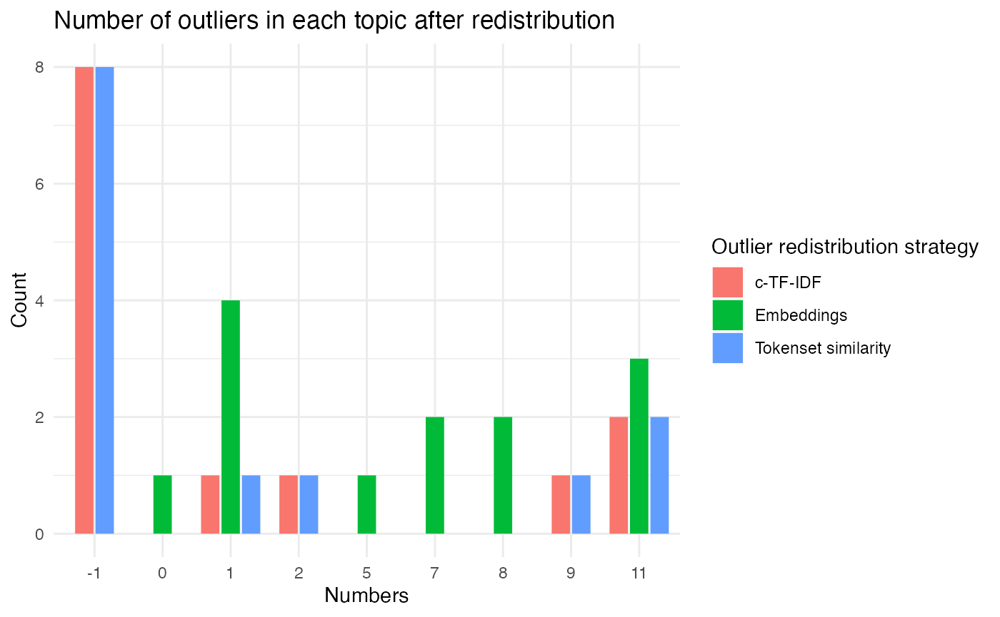

library(BertopicR)
library(dplyr)
library(tidyr)
library(ggplot2)
#> Warning: package 'ggplot2' was built under R version 4.3.1Changing the Model Representation
#> UMAP(low_memory=False, min_dist=0, n_components=5, n_neighbors=10, random_state=42, verbose=True)
#> Fri Oct 20 08:34:33 2023 Construct fuzzy simplicial set
#> Fri Oct 20 08:34:34 2023 Finding Nearest Neighbors
#> Fri Oct 20 08:34:35 2023 Finished Nearest Neighbor Search
#> Fri Oct 20 08:34:37 2023 Construct embedding
#> Fri Oct 20 08:34:38 2023 Finished embeddingOnce you are happy with the topics/clusters that have been formed, there are a few methods we can use to improve the topic representations and get a better understanding of what each topic is about.
The representation methods currently available are:
KeyBERT is a keyword extraction technique that uses BERT embeddings to represent our topics with appropriate keywords and phrases.
MaximalMarginalRelevance is a concept used to select the most relevant keywords or phrases while promoting diversity in keywords. It balances relevance to the topic with distinctiveness from previously chosen keywords or phrases using a trade-off parameter called lambda.
OpenAI allows us to use their available models to generate topic summaries. An OpenAI API key is required to access their api and models (to set this you should use Sys.setenv(“OPENAI_API_KEY” = “sk-”)).
HuggingFace allows us to use their available models to generate topic summaries. Unlike with OpenAI, you will not need an API key and this is completely free. However, the models are not as sophisticated as some of OpenAI’s.
representation_keybert <- bt_representation_keybert(fitted_model = topic_model,
documents = sentences,
document_embeddings = embeddings,
embedding_model = embedder,
top_n_words = 10,
nr_repr_docs = 50,
nr_samples = 500,
nr_candidate_words = 100)
representation_mmr <- bt_representation_mmr(fitted_model = topic_model,
embedding_model = embedder,
diversity = 0.5)
representation_openai <- bt_representation_openai(fitted_model = topic_model,
documents = sentences,
openai_model = "gpt-3.5-turbo",
nr_repr_docs = 10,
chat = TRUE,
api_key = "sk-")
representation_hf <- bt_representation_hf(fitted_model = topic_model,
documents = sentences,
task = "text2text-generation",
hf_model = "google/flan-t5-base",
default_prompt = "keywords")Now that we have trialled a few representation methods, we can look at how they compare to default representations and we should be able to get a good idea of what each topic is about. You will notice that the gpt-3.5 model gives the most coherent topic representation and it would be easy to just take that as gospel and chose a topic title based on that. It is important to remember, like with the other representation methods, only the number you input for nr_repr_docs in bt_representation_openai has been sent to the model and for a large topic, these documents may not represent the topic as a whole.
topic_representations <- topic_model$get_topic_info() %>%
mutate(keybert = representation_keybert,
mmr = representation_mmr,
# openai = representation_openai,
flanT5 = representation_hf) %>%
select(-Representative_Docs)
topic_representations %>% select(-Topic, -Count, -Name) %>%
mutate(keybert = stringr::str_replace_all(keybert, "_",", "),
mmr = stringr::str_replace_all(mmr, "_",", "),
Representation = stringr::str_replace_all(Representation, "_",", ")) %>%
DT::datatable(options = list(scrollX = TRUE))
#> Warning: There was 1 warning in `mutate()`.
#> ℹ In argument: `Representation = stringr::str_replace_all(Representation, "_",
#> ", ")`.
#> Caused by warning in `stri_replace_all_regex()`:
#> ! argument is not an atomic vector; coercingModifying Topics
Two of the biggest inconveniences that using hdbscan clustering introduces is the generation of large numbers of clusters (topics) and the presence of what can be huge numbers of outliers. In order for our topic analysis to be practical and digestible, we will likely want to reduce the number of topics and, depending on our use case, we may want to reduce the number of outliers.
Merging Topics
Particularly when using hdbscan we can end up with a large number of topics and it can be useful to merge some of these topics which we think are suitably similar. We can get a certain idea about this from the topic descriptions that we have already generated, but it can also be useful to look at the data more closely before merging.
Hierarchical Clustering
Hdbscan clustering forms clusters through a hierarchical processes which you can visualise with a dendrogram. This can be useful when merging topics as you can see how clusters split to become the topics that emerged from our topic modelling process. The x-axis here is a measure of the distance between topic embeddings, so when clusters split at a higher x-value there is a larger distance between their embeddings. We can see that for this particular dataset, the clusters split into their final topics quite early on in the hierarchy and so it might not be appropriate to merge topics based on how they have emerged in the hierarchy.
hierarchical_topics <- topic_model$hierarchical_topics(sentences)
topic_model$visualize_hierarchy(hierarchical_topics = hierarchical_topics)$show()#>
0%| | 0/57 [00:00<?, ?it/s]
54%|#####4 | 31/57 [00:00<00:00, 309.17it/s]
100%|##########| 57/57 [00:00<00:00, 313.34it/s]The hierarchical structure is based on how topics emerge based on the similarity of their embeddings, however, we can often find topics that we think should be merged based on our own knowledge. For example, despite their embeddings having a relatively large distance between them, topic 2 and 14 both appear to be about food.
Looking at Topic Contents
topic_representations %>%
filter(Topic %in% c(2,14))
#> Topic Count Name
#> 1 2 20 2_hung_work_carved_quite
#> 2 14 13 14_spring_tender_need_food
#> Representation
#> 1 hung, work, carved, quite, knife, torn, seen, little, hold, needs
#> 2 spring, tender, need, food, drink, needed, came, horse, road, grass
#> keybert
#> 1 carved_hung_brass_hold_knife_quite_bright_coat_fine_work
#> 2 grass_drink_horse_road_food_tender_way_man_spring_need
#> mmr
#> 1 knife_carved_little_needs_work_quite_torn_seen_hold_hung
#> 2 grass_horse_needed_road_need_food_tender_came_drink_spring
#> flanT5
#> 1 carved wooden work
#> 2 horse came in spring for food and drinkFor larger topics we might need to use more sophisticated language analysis tools, but since these topics are relatively small, we can just examine exemplars.
data %>%
filter(topic %in% c(2,14)) %>%
select(sentence, topic)
#> # A tibble: 33 × 2
#> sentence topic
#> <chr> <int>
#> 1 the hogs were fed chopped corn and garbage. 14
#> 2 the pearl was worn in a thin silver ring. 2
#> 3 a tusk is used to make costly gifts. 2
#> 4 hemp is a weed found in parts of the tropics. 14
#> 5 she sewed the torn coat quite neatly. 2
#> 6 she has a smart way of wearing clothes. 2
#> 7 farmers came in to thresh the oat crop. 14
#> 8 coax a young calf to drink from a bucket. 14
#> 9 madam, this is the best brand of corn. 14
#> 10 the gold ring fits only a pierced ear. 2
#> # ℹ 23 more rowsI am pretty happy that these two topics could be merged into a larger “food” topic, to do this we use the bt_merge_topics function:
bt_merge_topics(fitted_model = topic_model,
documents = sentences,
topics_to_merge = list(2, 14))
#>
#> Topics merged & input model updated accordinglyWe have been maintaining a dataframe all along that is tracking each step we’ve completed, it would be good to now update that dataframe with our new topics.
Reducing Outliers
One feature of hdbscan is the outlier category, which can be quite large. Sometimes we might want to redistribute these outlier documents so that they fall within one of the existing topics. There are a number of methods to achieve this and it is good practice to look at different parameters and different methods when reducing outliers as it can be quite difficult to redistribute outlier documents while maintaining clarity within your topics. To this end, you should consider project goal is before implementing any of these methods, it is more important to have concise and coherent topics or to force most/all of your documents into topics, is it a balance of the two?
The methods currently available to us are:
Tokenset Similarity: Divides each documents into tokensets and calculates the c-TF-IDF cosine similarity between each tokenset and each topic. The summation of each cosine similarity score for each topic across each outlier document gives the most similar topic for each outlier document.
Embeddings: Measures the cosine similarity between embeddings for each outlier document and each topic. If we have passed an empty embedding model to bt_compile_model (which we did), we must specify an embedding model to be used with this function.
c-TF-IDF: Calculates the c-TF-IDF cosine similarity for each outlier document and topic and redistributes outliers based on the topic with which it has the highest similarity.
We can play with all outlier strategies as, unlike when we merge topics or fit the model, the bt_outlier_* functions do not update the model, they only output a df with each document, their current topic classification and the potential new topics. We must update the model using bt_update_topics to actually change the topics within the model.
outliers_ts_sim <- bt_outliers_tokenset_similarity(fitted_model = topic_model,
documents = sentences,
topics = topic_model$topics_,
threshold = 0.1)
outliers_embed <- bt_outliers_embeddings(fitted_model = topic_model,
documents = sentences,
topics = topic_model$topics_,
embeddings = reduced_embeddings,
embedding_model = embedder,
threshold = 0.1)
outliers_ctfidf <- bt_outliers_ctfidf(fitted_model = topic_model,
documents = sentences,
topics = topic_model$topics_,
threshold = 0.1)It would be useful now to look at how each method has redistributed the outlier topics. The graph below shows how outliers have been redistributed to topics below topic 12. You can see how each strategy does not redistribute topics in the same way, the embedding strategy for example, has found that 6 outlier documents are best represented by topic 1, while no other strategy has found any outlier documents that are best represented by topic 1. The embedding method has also redistributed all outlier documents, while the c-TF-IDF and tokenset similarity methods have left certain documents as outliers. This is where playing around with the threshold parameter, to find a good fit for your data and chosen strategy, is important.
data %>%
mutate(outliers_ts_sim = outliers_ts_sim$new_topics,
outliers_embed = outliers_embed$new_topics,
outliers_ctfidf = outliers_ctfidf$new_topics) %>%
filter(merged_topics == -1,
outliers_ctfidf < 12,
outliers_embed < 12,
outliers_ts_sim < 12) %>%
select(outliers_ts_sim, outliers_embed, outliers_ctfidf) %>%
pivot_longer(everything(), names_to = "outlier_distribution_strategy", values_to = "topic") %>%
ggplot(aes(x = as.factor(topic), fill = outlier_distribution_strategy)) +
geom_bar(position = position_dodge2(preserve = "single")) +
theme_minimal() +
labs(x = "Numbers",
y = "Count",
title = "Number of outliers in each topic after redistribution",
fill = "Outlier redistribution strategy") +
scale_fill_discrete(labels = c(outliers_ctfidf = "c-TF-IDF",
outliers_embed = "Embeddings",
outliers_ts_sim = "Tokenset similarity"))
You should take a look at some of the documents which have been redistributed and the topic which they have been redistributed to before deciding on the best strategy for your data. Unfortunately, this can be quite laborious for large amounts of data with many topics.
Once you have settled on a new list of topics that you are happy with, we can update the dataframe we have been keeping. For example, if after looking at the data we decided that the Tokenset Similarity method was the most appropriate:
data <- data %>%
mutate(new_topics = outliers_ts_sim$new_topics)
data %>%
filter(merged_topics == -1) %>%
select(merged_topics, new_topics)
#> # A tibble: 162 × 2
#> merged_topics new_topics
#> <int> <dbl>
#> 1 -1 -1
#> 2 -1 34
#> 3 -1 41
#> 4 -1 56
#> 5 -1 28
#> 6 -1 51
#> 7 -1 -1
#> 8 -1 -1
#> 9 -1 38
#> 10 -1 12
#> # ℹ 152 more rowsWhile you can update your model with the new topics, first consider the future use of your model, if your intention is to use your model to fit new data, is it better to fit based on the original, more selective topic classification or the less selective classification that outlier reduction has resulted in?
bt_update_topics(fitted_model = topic_model,
documents = sentences,
new_topics = outliers_ts_sim$new_topics)
#>
#> Input model updatedIf you would like to have a deeper look at what else we can do using bertopic, refer to the BertopicR function documentation and the BERTopic python library, https://maartengr.github.io/BERTopic/index.html.